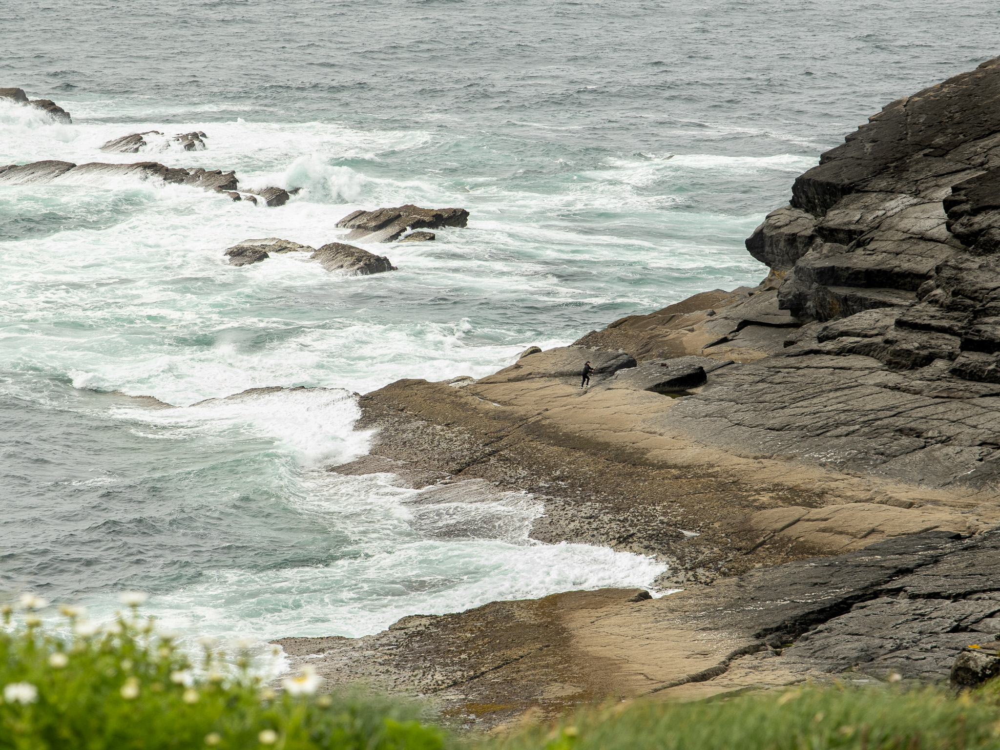
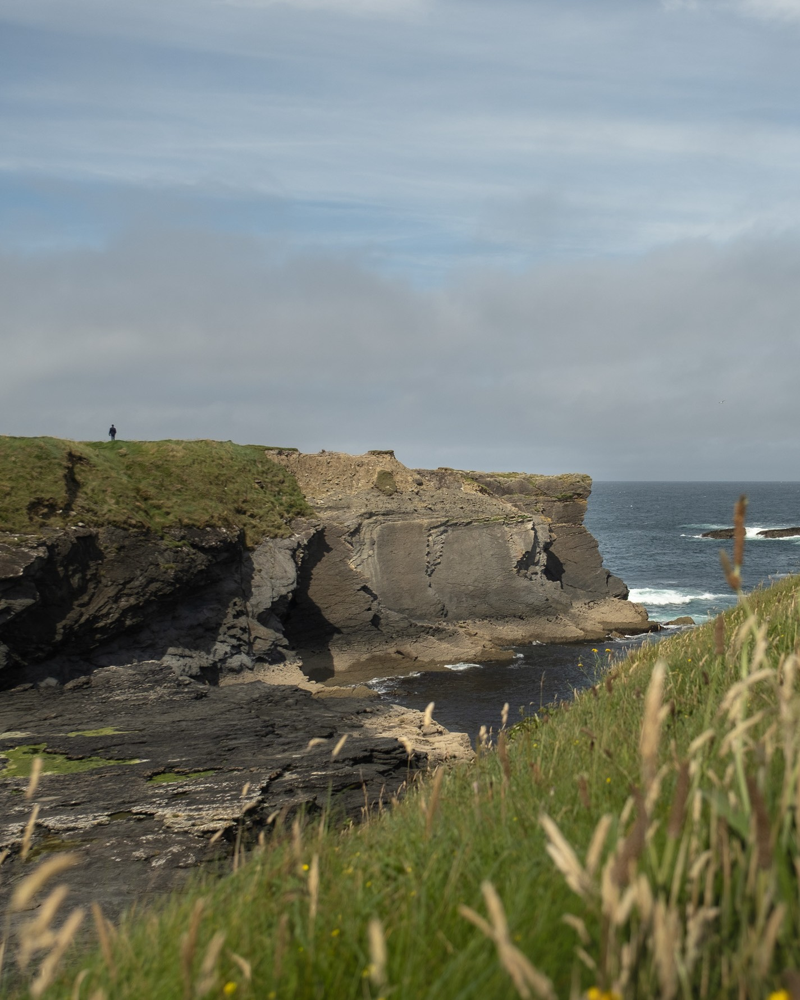
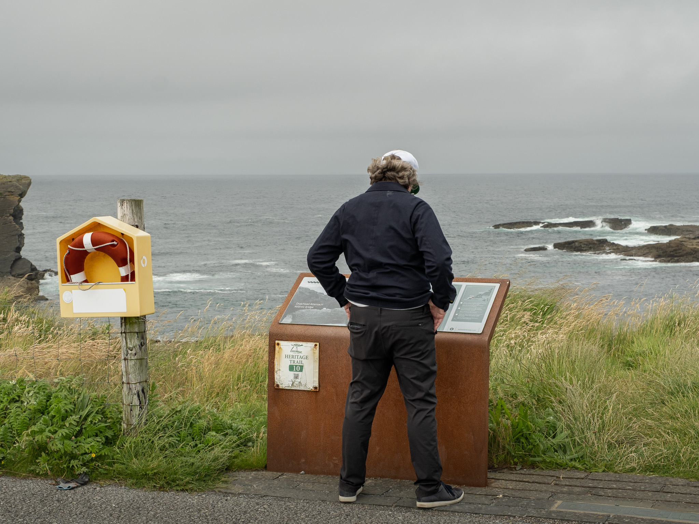
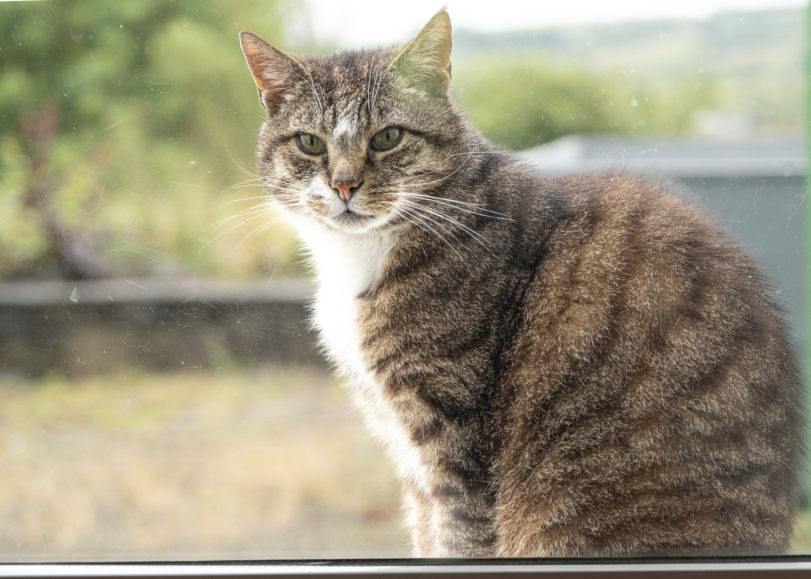
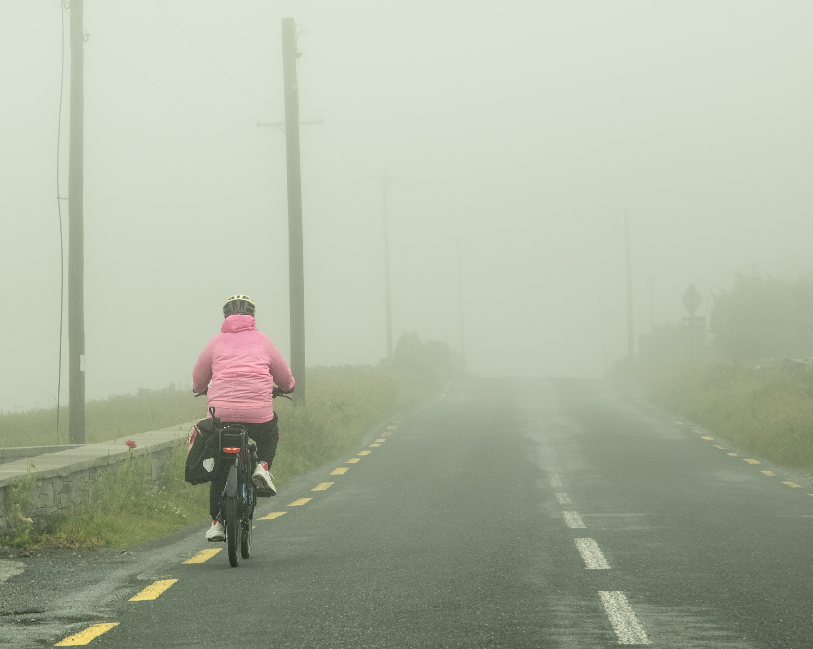
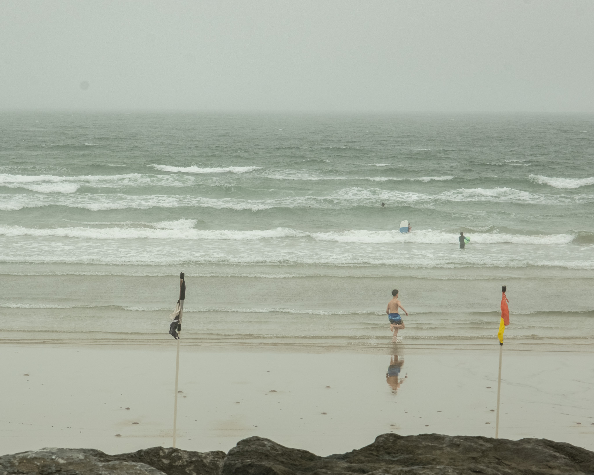
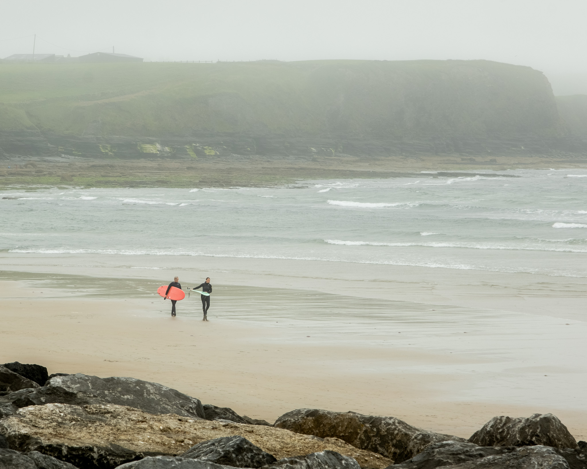

July 2026
Kilkee and Lahinch, Ireland
Summer clouds, Atlantic wind, cliffs and surfing beaches along Ireland’s western edge.







Summer clouds, Atlantic wind, cliffs and surfing beaches along Ireland’s western edge.






